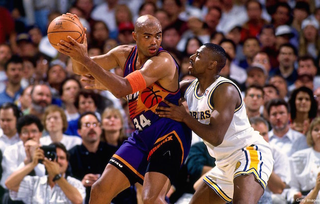
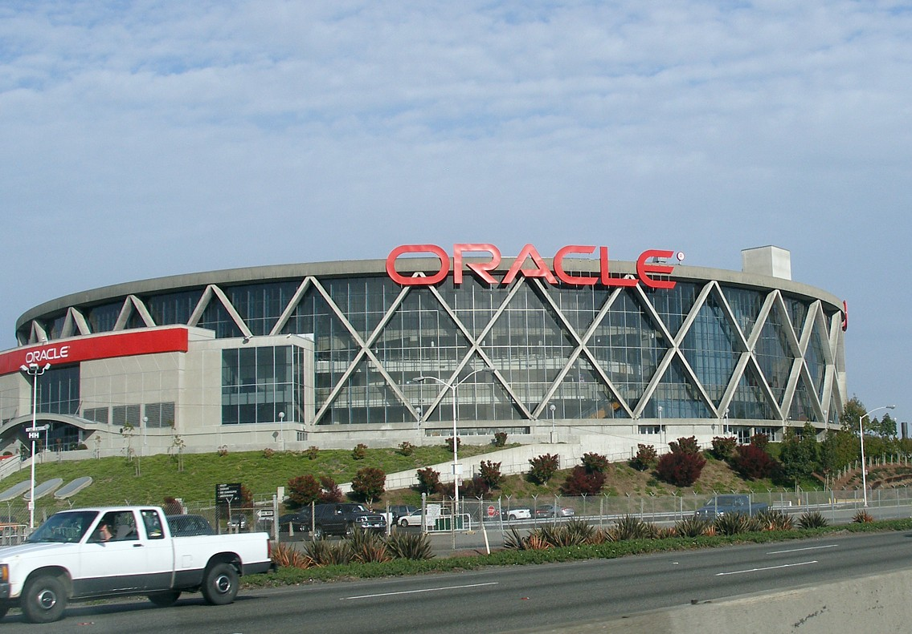
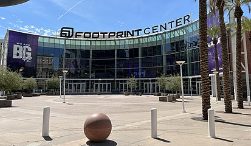
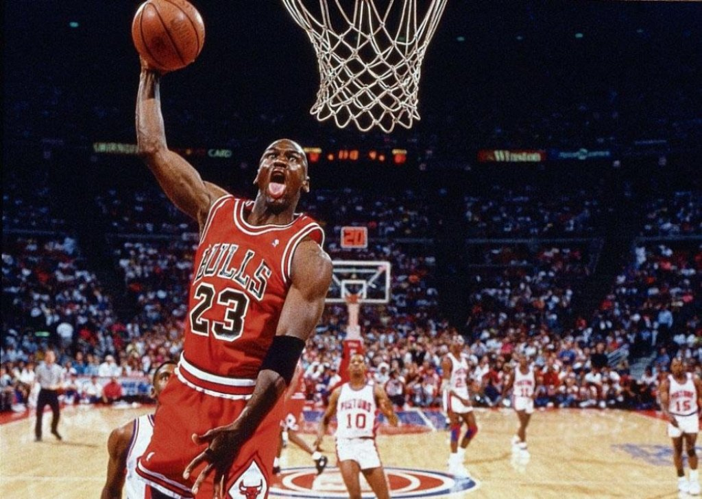
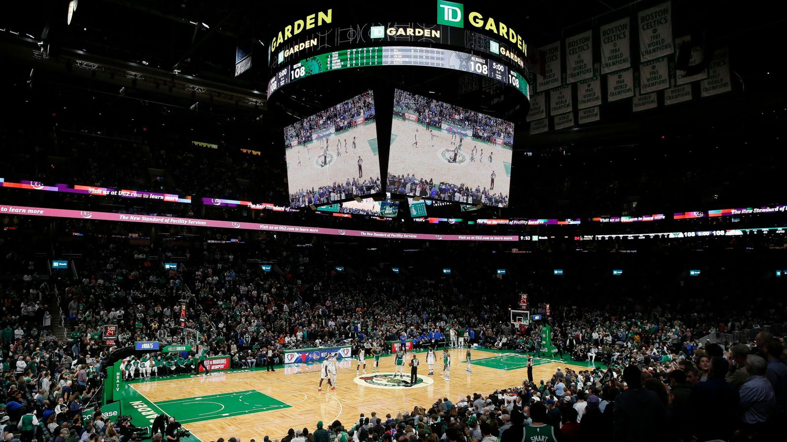

| Index | Joueurs | Equipe | Date , lieu et adversaire | Stade | Stats | Anecdote | Highligths |
|---|---|---|---|---|---|---|---|
| 1 | Charles Barkley  | Phoenix Suns | Le 4 mars 1994, à Oakland contre les Golden Sate Warriors | The Oracle Arena  |
|
La NBA sortira la « Barkley rule », interdisant à un joueur de rester plus de cinq secondes dos au panier. | |
| 2 | Phoenix Suns | Le 1er juin 1993, à Phoenix contre les Sonics de Seattle | Footprint Center (anciennement America West Arena)  |
|
Une des plus grandes ligne statistique | ||
| 3 | Michael Jordan  |
Chicago Bulls | Le 20 avril 1986, à Boston contre les Boston Celtics | TD Garden  |
|
Larry Bird, superstar de la ligue, lui rendra un hommage par une déclaration restée à la postérité : « Je pense que c’était Dieu déguisé en Michael Jordan. » |